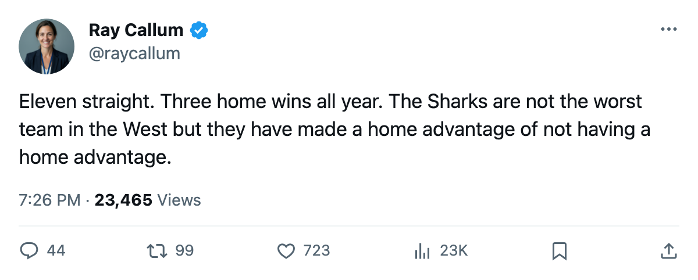
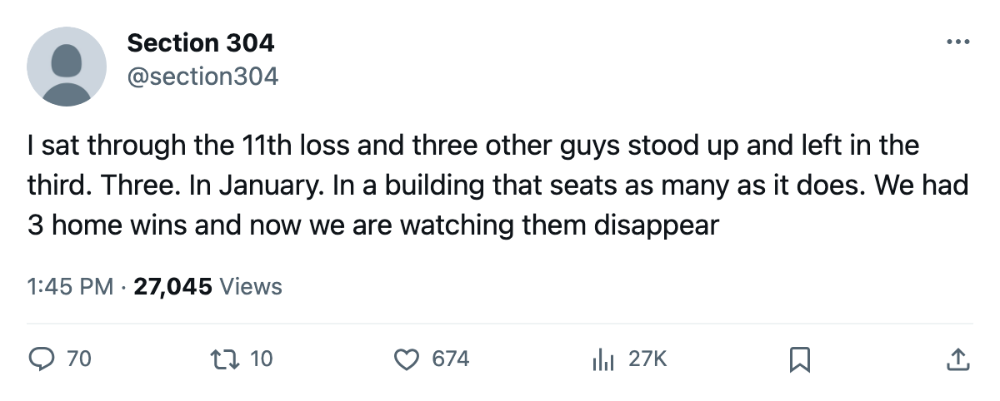

Numbers Game: San Jose Has Not Won in 11 and Has 3 Home Wins All Season
The Sharks are 3-16 in front of their own crowd, on the longest active skid in hockey, and the Pacific race does not wait.
 Ray CallumSenior correspondent · Home Ice Network
Ray CallumSenior correspondent · Home Ice Network
 San Jose Sharks has lost 11 consecutive games. In that span they are 0 wins, 0 overtime wins, 4 overtime losses, 7 regulation losses. Four points from 11 games. The home record for the entire season reads 3-16, tied with
San Jose Sharks has lost 11 consecutive games. In that span they are 0 wins, 0 overtime wins, 4 overtime losses, 7 regulation losses. Four points from 11 games. The home record for the entire season reads 3-16, tied with  Los Angeles Kings for the fewest home wins in the league. The Sharks have been outscored 92-115 in 39 games and sit 11 points out of the 8th spot in the Western Conference.
Los Angeles Kings for the fewest home wins in the league. The Sharks have been outscored 92-115 in 39 games and sit 11 points out of the 8th spot in the Western Conference.
The streak is the league's longest active run.  Edmonton Oilers is next at 6 straight losses.
Edmonton Oilers is next at 6 straight losses.  Mighty Ducks of Anaheim just snapped a run of its own at 6 before tonight's start against Dallas. San Jose has not stopped losing since late November.
Mighty Ducks of Anaheim just snapped a run of its own at 6 before tonight's start against Dallas. San Jose has not stopped losing since late November.
The 8 overtime losses tie for the 2nd most in the league (Chicago carries 9), and that tells you the Sharks have been competitive enough to reach overtime with regularity but unable to close. Their overall record is 11-19-8. That's 8 OTLs against 19 regulation losses, the highest conversion rate of losses to OTL in the conference. They do not lose badly. They lose in the last 5 minutes or the shootout.
 Evgeni Nabokov87 has started 31 of 39 games, a 79 percent share. The backup
Evgeni Nabokov87 has started 31 of 39 games, a 79 percent share. The backup  Jeff Hackett83 has 8.
Jeff Hackett83 has 8.  Miikka Kiprusoff76 has 1 appearance. They have used all three and the results have not changed. Nabokov carries the workload.
Miikka Kiprusoff76 has 1 appearance. They have used all three and the results have not changed. Nabokov carries the workload.
The Sharks' 9-11 road record is not the problem. Their 3-16 home record is. The crowd at what the record calls the Sharks' home rink has watched 3 wins in 19 games. Los Angeles Kings also carries 3 home wins, and they have played 21 home dates to San Jose's 19.
Their next game comes on 2006-01-07 against  Nashville Predators in Nashville, where the Sharks are 0-2 this season with 3 goals for and 7 against. If the streak survives that date, it reaches 12. The Pacific division leader
Nashville Predators in Nashville, where the Sharks are 0-2 this season with 3 goals for and 7 against. If the streak survives that date, it reaches 12. The Pacific division leader  Dallas Stars sits 26 points ahead.
Dallas Stars sits 26 points ahead.

